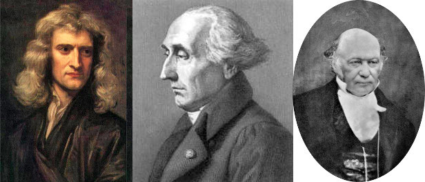

C4.3 Fundamental Interactions#
C4.3.1 Individual Forces#
For us to apply Newton’s second law, we must distinguish individual forces. For now, we make a list of the forces we are most likely to encounter. The nature of some of these forces are more complicated and are detailed in more advanced classes.
Force of gravity#
The most common of them all is the force due to gravity. In the case where Earth is the origin of the force, it is considered a constant force near the surface of the Earth and directed towards the center of the Earth. Further away from the surface, we must apply Newton’s law of gravity.
The force of gravity is given by
where \(m\) is the mass of the particle being acted upon and \(g = 9.81~\textrm{m/s}^2\) is the acceleration due to gravity.
Gravity is considered at field force as it acts through field interactions and do not require objects to be on contact.
Normal force#
Is another common force that is the normal force. This is a force that is always present when two particles are in contact. The word “normal” originates from the fact that the vector is perpendicular to the contact point on between the two surfaces, which is known as a normal vector in mathematical language.
There is no equation for the normal force as it depends on the situation.
Example: A block on a table top will exert a force downwards onto the table. The table pushes back onto the block. This is considered a normal force action and re-action pair.
Tension force#
The tension force is a force transmitted throughout a string,rope, belt, etc. It can become highly complicated depending on the specific case.
There is no equation for the tension force in this course and we must infer based on context.
Friction force#
This is another force that can be very complicated. However, we will apply it in some cases where we can determine the friction force if we know the normal force:
The \(s\) stands for static and it is the force of friction that prevents an object to move under an applied force.
Here, \(k\) stands for kinetic and it is the frictional force on a particle in linear motion.
Push/Pull forces#
These are typically applied force and will depend on the situation.
Spring force#
Spring forces can also be very complicated. Fortunately, many springs fall under a category known as linear springs which implies that the force varies linearly with the stretching/compression of the spring. Such springs are known to follow Hooke’s law:
where \(k\) is the spring constant (how much force is needed to stretch the spring 1 meter), and \(x\) is the displacement from spring equilibrium
C4.3.2 Classical Mechanics#
Before we go on to apply Newton’s laws using knowledge of individual forces or interactions, I find it is to be suitable to provide a survey of how we actually understand the world as of today. Newton’s view is appropriate for a wide range of everyday phenomena, but we also know that it is not how naure works on its most fundamental levels.
Newton formulated his theories (better word than laws) based on observations and they constitute what is known as Newtonian Mechanics. The focus of Newtonian mechanics is in identifying the forces (or interactions) that interacts with an object and less on the object itself.
A second approach of formulating the classical laws of physics is through the Lagrangian and Hamilton’s Principle, which is a variational method also known as the principle of least action.
While both classical approaches fail in explaining modern physics, the principle behind least action is considered the fundamental principle of nature as the modern theories can be expressed from this principle.
C4.3.3 Modern Physics: Field Theories#
The way nature works as we know as of today (tomorrow may be different) is described through quantum field theories. The interaction of forces as Newton described originates from four fundamental fields:
Quantum Gravity
Electric
Weak
Strong
The concept of force can be desribed in two ways:
action of field generated by one particle acting on another particle resulting in momentum transfer.
one particle emitting a virtual particle which is absorped by another particle resulting in momentum transfer.
I know you are sitting on the edge of your chair of pure excitement right now, so I will go ahead and tell a little bit more.
Quantum Gravity#
This theory describes gravity where quantum physics cannot be ignored and where general relativity breaks down (for example, singularity of black hole). This is the one field theory that still is debated. There are two dominant theories: string theory (more specifically M-theory) and loop quantum gravity. Each of these theories are actually hypotheses as no observations have yet confirmed (or disproven) them.
In quantum gravity, the gravitational field interacts with particles with mass charge and the virtual particle is the graviton. The reason to call mass for mass charge will become evident soon.
Electric#
This theory describes the interaction between light and matter and is arguable the most successful theory of physics as verification of extremely accurate predictions has been performed. The theory is known as Quantum Electro Dynamics or QED. The great Richard Feynman was one of three recipient of the Nobel Prize in physics for work on this theory. The others were Shin’ichirō Tomonaga and Julian Schwinger. It should be noted that their work was build on work by many other prominent physicists such as Paul Dirac and Hans Bethe.
In quantum electro dynamics, the electric field interacts with particles with electric charge and the virtual particle is the photon.
Weak#
The weak interaction is also known as electro-weak interaction and is responsible for radioactive decays of subatomic particles. The theory is known as Quantum Flavor Dynamics or QFD and can be combined with QED (hence the name electro-weak).
In quantum flavor dynamics, the weak field interacts with particles with flavor charge and the virtual particles are the \(W^+\), \(W^-\), and Z bosons. The flavor charges come in flavors of up, down, top, botton, strange, and charm. Yah, who came up with that?
Below is a Feynmann diagram showing the decay of a neutron (three quarks in flavors of up, down, and down) into a proton (three quarks i flavors of up, up, and down) and producing an electron and an anti electron neutrino.
In contrast to the gravitational and electric field theories, there is no equivalent classical limit for the weak interaction since it is limited to nuclear processes.
Strong#
The strong interaction is described through Quantum Chromo Dynamics or QCD. This interaction is called strong since it is significantly stronger than the other field interactions on short scales.
On the smallest scale, the strong interaction is responsible for holding, or gluing, quarks together to form hadrons such as protons and neutrons, baryons, and mesons. An interesting fact is that the mass of these particles are mostly energy in form of the binding energy between the interacting quarks, and we say that the field energy is what makes up 99\(\%\) of the mass of protons and neutrons. This is a great example of \(E = mc^2\), which shows that energy and mass are equivalent.
Due to its strong nature, the interaction between quarks can be felt between individual hadrons as well. That is, one hadron can interact with another hadron and this is known as the residual strong force or nuclear force. This interaction binds hadrons together on scales comparable to neighboring hadrons whereas the electric interaction will dominate on larger scale. This explains why, for example, a helium nuclei is stable. Since a helium nuclei contains two protons and two neutrons, one may expect the eletric repulsive interaction to push the protons apart. However, the strong interaction owerpowers the electric repulsion and holds the protons and neutrons together to form a stable nuclei. This process holds for nuclei up to Bismuth with 83 protons and 126 neutrons. As the nuclei gets larger, more and more neutrons are required to hold it together until the size of the nuclei is such that the electric interaction repels the protons apart and we have an unstable nuclei.
The short-scale strong field interacts with particle possessing color charge (red, green, blue, and anti-red, anti-green, anti-blue). The great Richard Feynman called his colleagues for idiot physicists for providing this labeling. The virtual particles are the gluons.
The residual force acts on left-over color or the hadron/baryon/meson particles, while the messengers (or virtual particles) are the \(\pi\) and \(\rho\) mesons.
General Relativity#
On very large scale, general relativity tells us that gravity as we know it, and as described through Newton’s law of gravity, is not a real interaction but instead a manifestation of space-time curvature. In this theory, mass and energy dictates how space-time curves and space-time curvature dictates how matter moves. Just as with the quantum field theories, the principle is derived from the Lagrangian and Hamilton’s Principle. This leads to the Geodesic Equation, which provides us with a set of differential equations with solutions that parameterizes the path of a particle or photon.
The input into the geodesic equation is a metric tensor describing a metric for a given coordinate system. For example, in a flat 2D Euclidean space, the metric is simply \(ds^2 = dx^2 + dy^2\), and the solution to the geodesic equation is a straight line. In fact, all Euclidean spaces are flat space whereas Minkowski space is a flat space-time. Special relativity is general relativity in flat space-time. When the space-time is curved, we consider a four-dimensional Lorentzian manifold.
In flat space-time,two observers at rest relative to each other will measure the same elapsed time whereas two observers moving with respect to each other will measure two different elapsed times (time dilation). In curved space-time, the two observers at rest will not measure the same elapsed time if one or the other is near a massive object, unless they are at the same position infinitely far away from the massive object. Hence, there are time dilations due to relative motion and due to massive objects. We actually experience this in everyday life through GPS systems as signals from GPS satellites are subject to time dilation from relative motion, but also due to space-time curvature of the Earth.